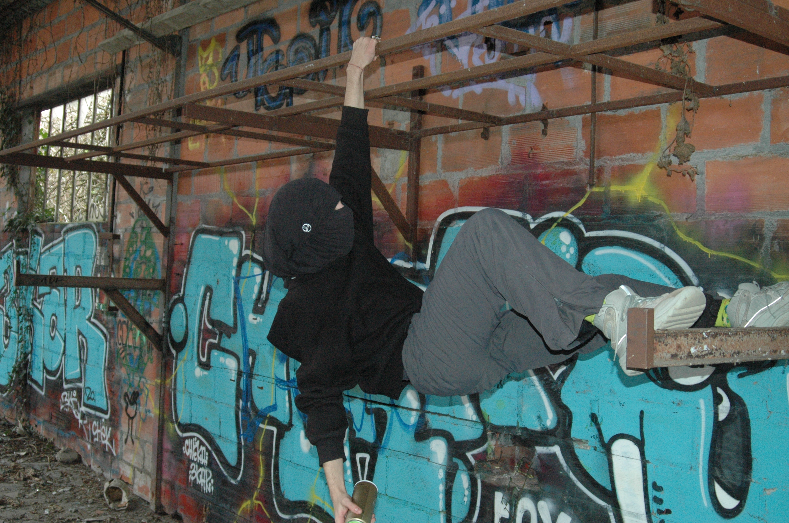
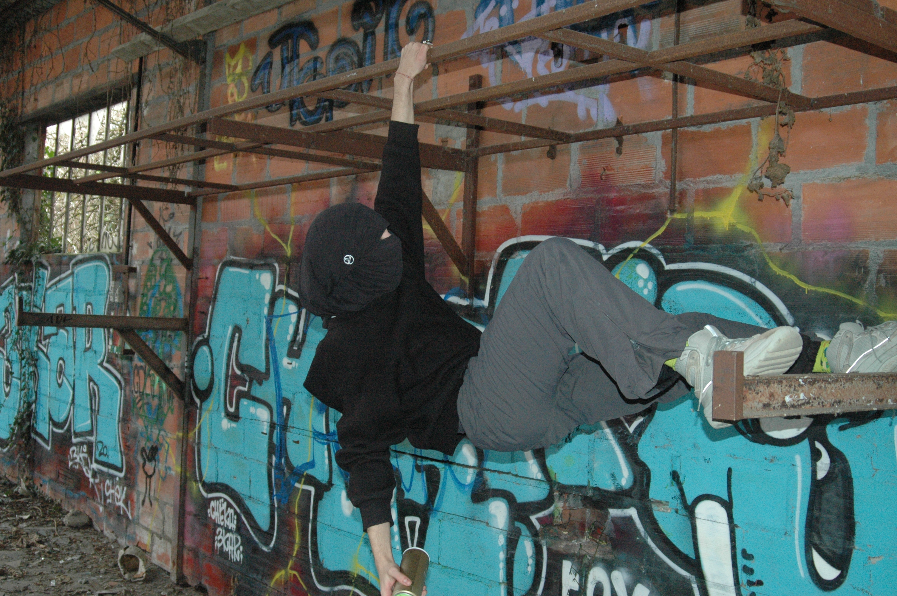

-CONCEPT-
Dans nos villes, nos rues, sur nos murs le tag est omniprésent. Parfois politique, artistique ou sociale l’art underground est souvent décrié; Pourtant c’est à travers l’expression impulsive que le peuple peut s’exprimer pleinement. Ainsi le béton devient la toile, la rue devient galerie, le citoyen devient artiste. C’est deux de ces adeptes de la bombe que j’ai suivi le temps d’un après-midi pour comprendre et capturer à l’aide de mon objectif la magie d’un art vandale.
-NOC-
Jeune tagueur de 18 ans originaire de la ville de Tours, Noc préfére l'impact du mot à l'esthétique de la fresque. Au travers de phrase courte le graffeur tente de passer des messages de paix en accord avec sa vision, à son actif la série des "je t'aime" graffer dans l'ensemble de sa ville natale.
-SINEP-
Graffeur expérimenté de 20 ans, originaire de Paris, Sinep parcour les ruelles de la capital à la recherche de lieux d'expressions. Véritable artiste vagabond il ne recherche ni l'eshtétique ni le message, mais marque simplement les villes de son passage.
-GALERIE-
 
